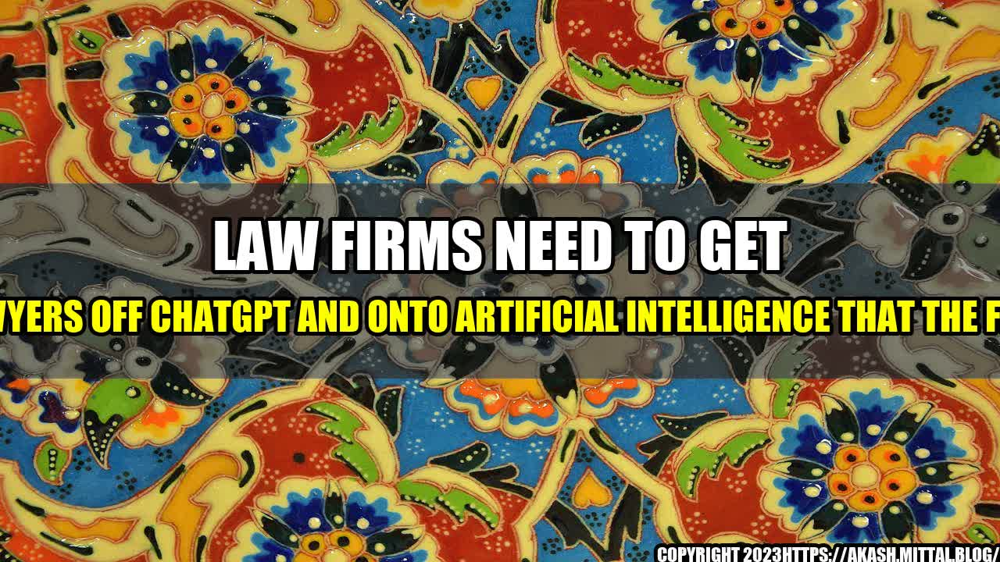

Law Firms Need To Get Lawyers Off ChatGPT And Onto Artificial Intelligence That The Firm

It was a Friday evening, and the team at Smith & Associates law firm had been working on a complicated case for weeks. As the clock struck 7 pm, Christina, one of the lead attorneys, received a notification on her phone - a message from her boss reminding them of the looming deadline.
Christina sighed and replied to the message, knowing full well that she and her team had been spending the majority of their work hours, communicating through messaging platforms like ChatGPT, instead of focusing on the case itself. This was not the first time, nor would it be the last.
Law firms have been notoriously slow to adapt to technological advancements, with many firms still relying on traditional methods of communicating and researching. However, with the rise of artificial intelligence (AI), it is essential that law firms start getting lawyers off ChatGPT and onto AI.
The Benefits of Artificial Intelligence in Law Firms
Artificial intelligence promises to transform the field of law by making research faster and more accurate, improving communication and collaboration, and streamlining administrative tasks. Here are some of the benefits of AI:
- Faster Research: Legal research is one of the most time-consuming tasks for lawyers. AI-powered research tools can search through vast databases of legal information in seconds.
- More Accurate: AI ensures that research is not only faster but also more accurate. AI tools are designed to eliminate bias, can cross-reference multiple sources of information, and analyze vast amounts of data to provide more accurate results.
- Better Communication and Collaboration: By using AI-powered communication tools, lawyers can receive real-time updates, share important documents, and collaborate seamlessly. AI chatbots can also help automate communication tasks, freeing up more time for lawyers to work on their cases.
- Streamlining Administrative Tasks: AI can automate administrative tasks like scheduling and document management, freeing up more time for lawyers to focus on their core responsibilities.
Examples of AI in Law Firms
While the use of AI in law firms is still in its early stages, some law firms are already reaping the benefits. Here are a few examples:
- Ross Intelligence: Ross Intelligence is an AI-powered legal research tool that can answer questions in natural language. It is currently being used by firms like BakerHostetler and Latham & Watkins to speed up research and improve accuracy.
- Jurispect: Jurispect is an AI-powered tool that helps firms identify risks and opportunities by analyzing large volumes of legal data. It is being used by firms like DLA Piper and White & Case to identify potential legal risks for their clients.
- Kira Systems: Kira Systems is an AI-powered contract analysis tool that can extract information from contracts and other legal documents. It is being used by firms like Clifford Chance and Allen & Overy to streamline contract review processes.
Conclusion
Artificial intelligence is changing the face of the legal industry. By leveraging AI-powered tools, law firms can improve research, communication, and collaboration, as well as streamline administrative tasks. This leads to faster, more accurate legal services and helps lawyers provide more value to their clients. To stay ahead of the curve, law firms need to start getting lawyers off ChatGPT and onto AI.
3 Key Takeaways:
- Artificial intelligence promises to transform the field of law by making research faster and more accurate, improving communication and collaboration, and streamlining administrative tasks.
- Examples of AI in law firms include Ross Intelligence, Jurispect, and Kira Systems. These tools have already been adopted by firms like BakerHostetler, Latham & Watkins, DLA Piper, White & Case, Clifford Chance, and Allen & Overy to speed up research and improve accuracy.
- To stay ahead of the curve, law firms need to start getting lawyers off ChatGPT and onto AI.
References
Hashtags
#AIinLawFirms #LawFirmTechnology #ArtificialIntelligence #LegalResearch #Communication #Collaboration #Streamlining #Automation
Category
Technology
Curated by Team Akash.Mittal.Blog
Share on Twitter Share on LinkedIn